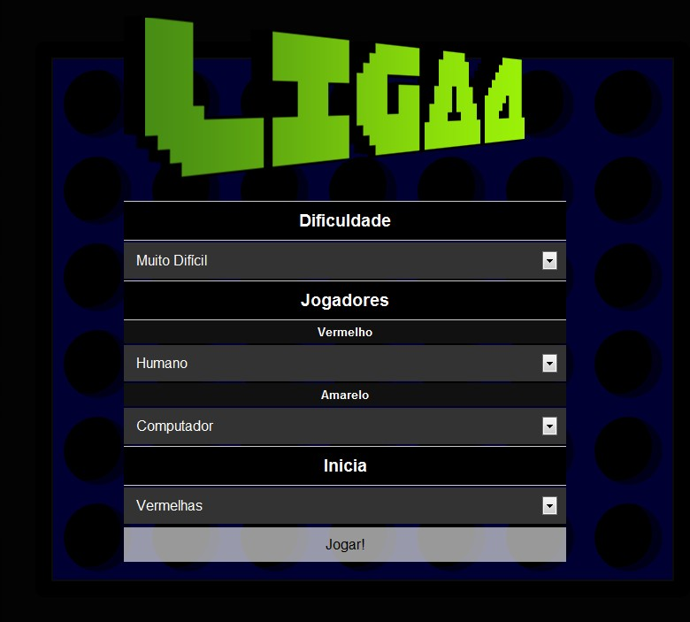
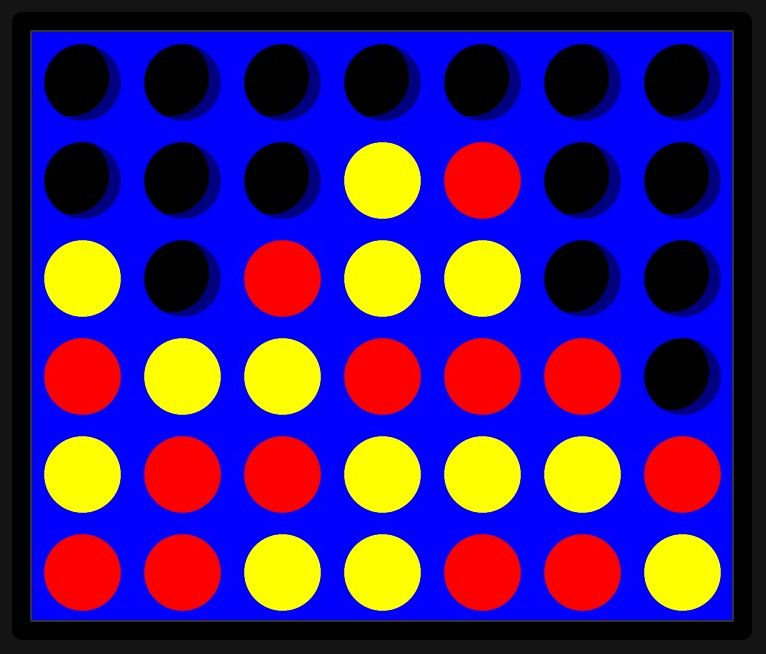
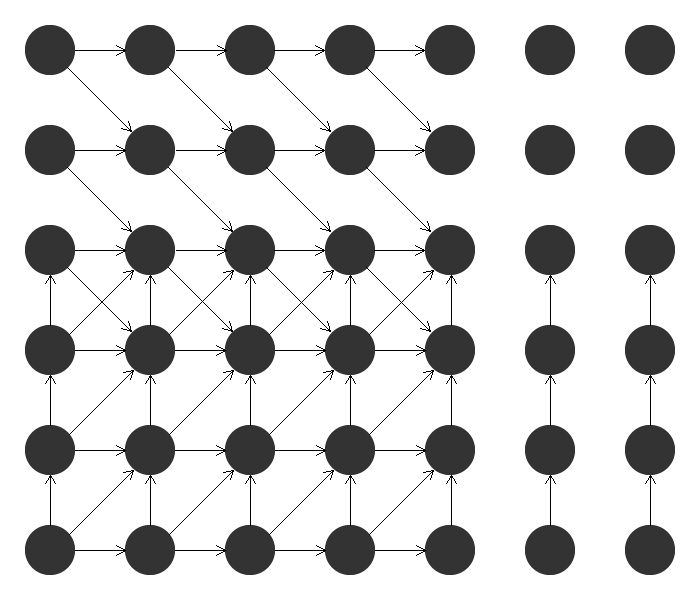
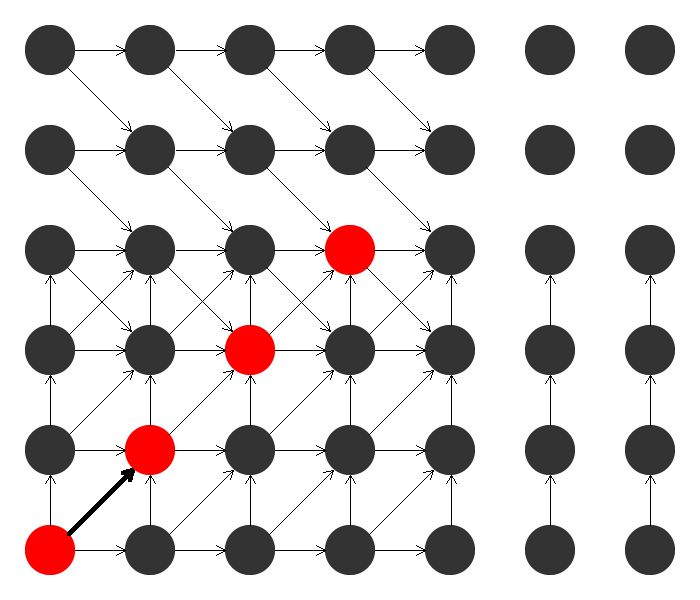
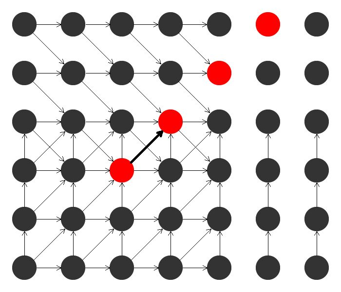

Inteligência Artificial
Liga 4
Gustavo Seganfredo
29 Jan, 2011
Gustavo Seganfredo
29 Jan, 2011


| Chrome | Firefox | Opera | Safari |
|---|---|---|---|
| 3 | 3.5.19 | 10.6 | 3 |
Internet Explorer ainda não se dignou
maxmove(board, lvl) =
if lvl == 0 return aval()
max = -WIN - 1
foreach valid_move in board
min = minmove(board + valid_move, lvl - 1)
if min > max
max = min
move = valid_move
return max
minmove(board, lvl) =
...
Registra todas as possíveis jogadas de vitória, para cada posição do tabuleiro
// Matriz de jogadas
// [row, col, muda_row, muda_col, peso]
jogadas = [
[0, 0, 0, 1, 2],
[0, 0, 1, 0, 1],
[0, 0, 1, 1, 1],
[0, 1, 0, 1, 2],
[0, 1, 1, 0, 1],
[0, 1, 1, 1, 1],
[0, 2, 0, 1, 2],
...
[5, 3, -1, 1, 1],
[5, 3, 0, 1, 1]];
jogadas.length === 60
  
aval(player) ->
a = 0
foreach jogada
foreach posicao
p_seq = (max pecas player em sequencia)
a_seq = (max pecas ¬player em sequencia)
a += str(p_seq, a_seq)
return a
str(p1, p2) ->
x = 0
if (p1 == 1) x += 1
if (p1 == 2) x += 10
if (p1 == 3) x += 100 - p2 * 20
if (p1 == 4) x = WIN
if (p2 == 1) x -= 1
if (p2 == 2) x -= 10
if (p2 == 3) x += 100 - p1 * 20
if (p2 == 4) x = -WIN
return x
Gustavo Seganfredo
29 Jan, 2011